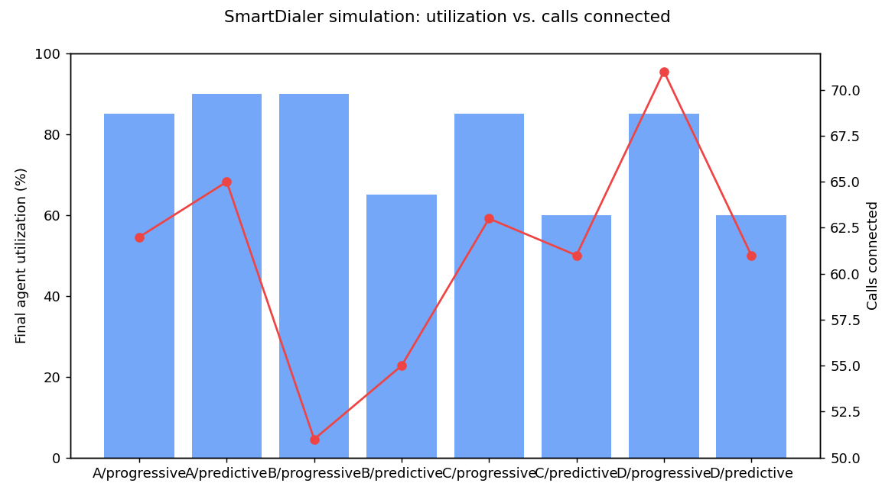

smartdialer — tech assignment prototype
This page is generated entirely from real output of the actual code in this repo — the same test run, simulation, and load test anyone can reproduce locally. Nothing below is a mockup.
Neither pacing engine holds a reference to the allocator or the provider. The only object standing between a pacing decision and an actual outbound call is the Safety Controller — structurally, not by convention.
predictive_engine.py has zero import of call_allocator.py — there is no code path to skip stage 03.
Pulled straight from the test suite and load test in this repo.
Explicit, tested transition graphs — not implicit status strings. Terminal call states never leave once entered, which is what makes duplicate/out-of-order provider events a non-issue.
agent
call
Every row below is a real SafetyDecision object logged during an actual simulation (scenarios A/B, 18 agents, seed 7) — not written by hand.
| mode | action | requested → approved | reason |
|---|---|---|---|
| predictive | REDUCE | 36 → 18 | predictive requested 36 based on a 50% answer-rate estimate; capped at 18 available agents. |
| predictive | REDUCE | 90 → 18 | a lower 20% answer-rate estimate pushed the request to 90; same hard cap applied regardless. |
| predictive | APPROVE | 1 → 1 | near end of ramp-up (14 already in flight, 3 agents free) — small request fits within capacity as-is. |
| progressive | APPROVE | 18 → 18 | progressive always requests exactly one call per available agent; nothing to reduce. |
| predictive | REJECT | 0 → 0 | zero agents available this tick — pacing engine itself requested nothing. |
| either mode | FALLBACK | 30 → 10 | provider_error_rate reached 0.85 (≥ 0.6 outage threshold) — forced to 1:1 progressive-style pacing until it recovers. |
First five rows: captured live from simulate.py. Last row: reproduced directly by calling SafetyController.evaluate() with a simulated outage snapshot — a real outage is a probabilistic ~3%/tick event and didn't fire in this particular nine-second run, so this row demonstrates the same code path without waiting on chance.
From tests/test_concurrency_race.py — 25 real OS threads contend for a single row. No application-level lock is involved; SQLite's own BEGIN IMMEDIATE transaction is the compare-and-swap.
From tests/test_worker_crash_recovery.py — no crash detection is needed; unrenewed leases are the recovery signal.
18 agents, 3 concurrent workers, mixed mock providers, 9-second runs. Utilization vs. calls connected across scenario/mode combinations.

| scenario / mode | initiated | connected | completed | failed | dup/stale ignored | utilization |
|---|---|---|---|---|---|---|
| B / predictive (mixed provider) | 30 | 19 | 17 | 1 | 4 | 77.8% |
| B / progressive (mixed provider) | 35 | 20 | 17 | 2 | 3 | 94.4% |
| A / predictive (provider B) | 32 | 18 | 16 | 1 | 3 | 88.9% |
"dup/stale ignored" = provider events that were duplicates or arrived out of order and were correctly dropped as no-ops instead of double-applying — Provider B's deliberately messy behavior, working as intended.
CAS agent-reservation throughput measured directly, not estimated — from load_test.py.
| agent pool | ops/sec | p50 latency | p99 latency |
|---|---|---|---|
| 100 | 1,809.4 | 0.12 ms | 0.88 ms |
| 1,000 | 2,577.0 | 0.11 ms | 0.26 ms |
| 5,000 | 2,130.8 | 0.11 ms | 0.41 ms |
Throughput stays flat as agent count grows — the bottleneck isn't agent count, it's that BEGIN IMMEDIATE serializes every writer on one SQLite file. Full reasoning and the fix (partition by campaign, move to row-level locking) in ADR.md.